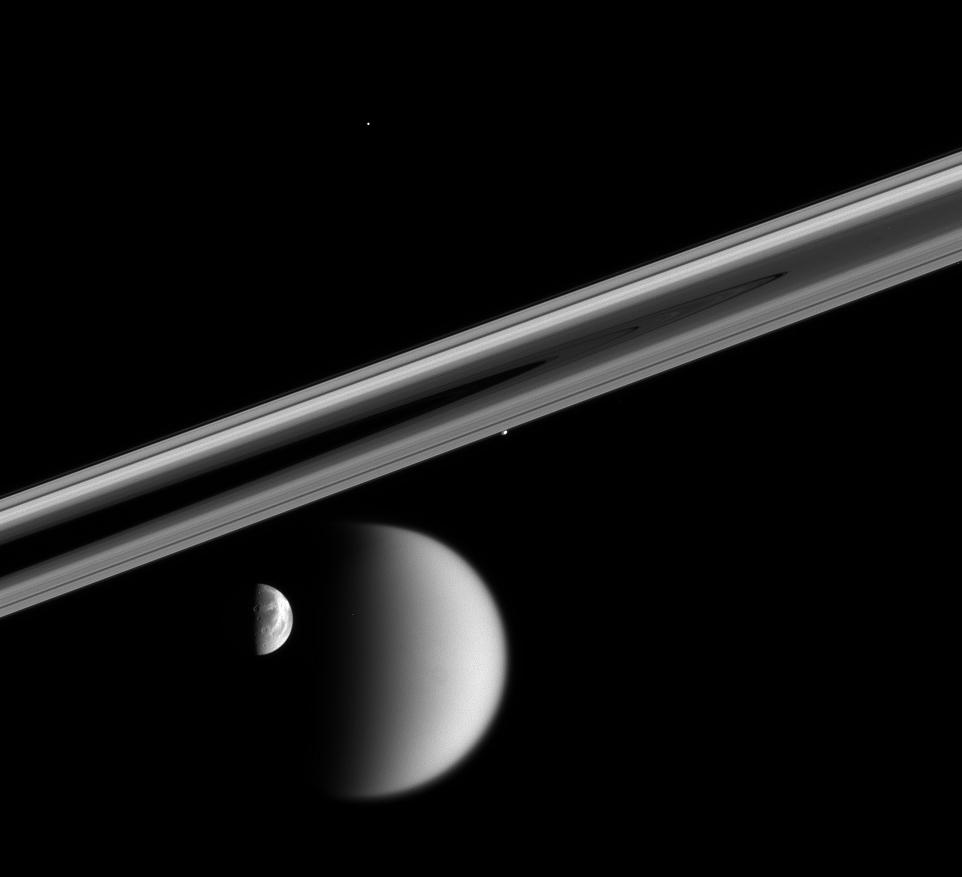
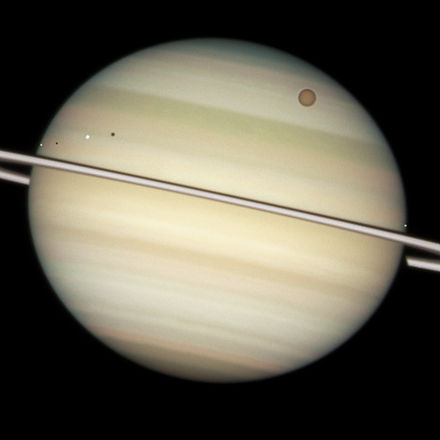

Moons
Saturn

Four moons of Saturn can be seen on this image by the Cassini spacecraft: Huge Titan and Dione at the bottom, small Prometheus (under the rings) and tiny Telesto above center.

Quadruple Saturn moon transit captured by the Hubble Space Telescope.